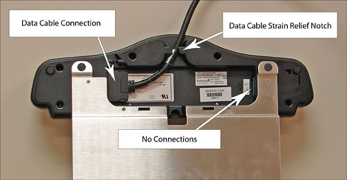
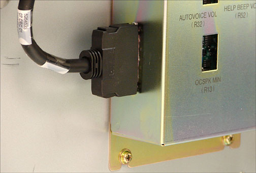
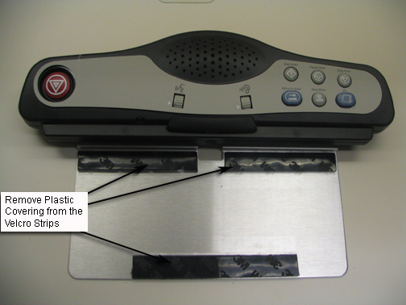
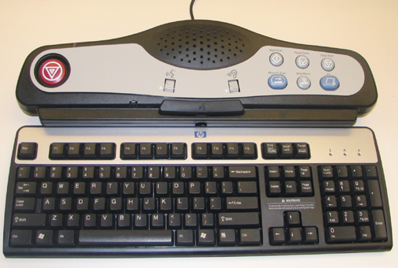
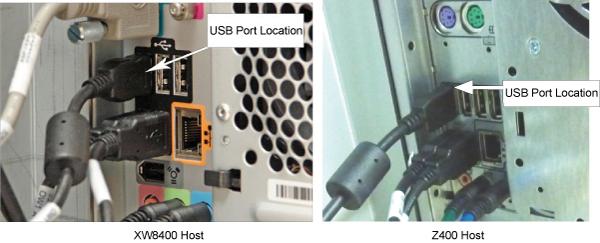
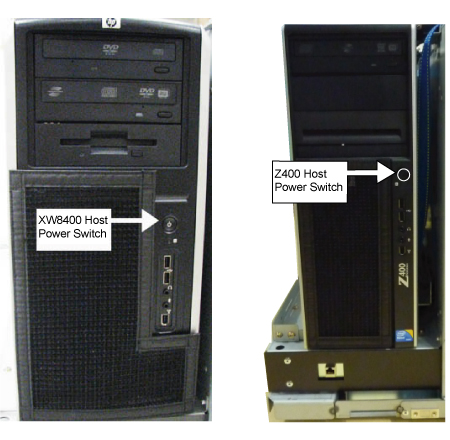

Operating Documentation
Direction 5500113, Rev# 3
Discovery MR450 1.5T Service Methods
Module Version 7.0, Version Date 5/13/09
Operating Documentation |
| Required Persons | Preliminary Reqs | Procedure | Finalization |
|---|---|---|---|
| 1 | Not Applicable | 20 (per procedure) | 30 mins |
This procedure outlines the steps for replacing or installing the SCIM, Keyboard, and mouse.
| Item | Qty | Effectivity | Part# | Manufacturer | |
|---|---|---|---|---|---|
| FE Tool Kit | 1 | - | - | - | |
| Item | Qty | Effectivity | Part# | Manufacturer | |
|---|---|---|---|---|---|
| SCIM with English Template installed | 1 | - | 2289697-2 | - | |
| Data Cable | 1 | - | 2262158-9 | - | |
| Standard USB US English Keyboard | 1 | - | 2275756 | - | |
| International Languages Overlay package | 1 | - | 5148389-9 | - | |
| Condition | Reference | Effectivity |
|---|---|---|
PDU must be powered off. | - | - |
Bring the software down.
Single-click on the Toolbelt icon.
Single-click on the [System Shutdown] button on the Service Desktop Manager.
Select [OK] to confirm the shutdown.
Wait for the system to indicate on the monitor that it is safe to power off the computer before proceeding. (It usually takes about 90 seconds for this message to appear.)
Turn off power to the PDU by following LOTO for the PGR PDU/Gradient Subsystem.
Disconnect the USB cable from the keyboard. This is a one-meter long USB extension that goes directly to the host computer.
Lift up on the keyboard to detach it from the SCIM base plate. The keyboard is attached with Velcro.
Pull the cable and defective keyboard clear of the SCIM and set it aside
Place new Velcro strips on the top of the strips attached to the SCIM as shown in Illustration 1.
Illustration 1: Placing Velcro Strips

Pull the replacement keyboard USB cable through the opening in the SCIM.
Remove the protective covering from the Velcro, see Illustration 1. Position the replacement keyboard, then firmly push down to fasten Velcro.
| NOTE: | The glue on the Velcro must be given time to set. Do not attempt to remove the keyboard from the SCIM for 24 hours. |
Connect the keyboard USB cable to the host computer.
This completes the keyboard replacement. Proceed to Finalization, Step 1.
Unplug the defective mouse from the host computer USB connector.
Install the new mouse by plugging it directly into the host computer USB connection. See Illustration 8.
This completes the mouse replacement. Proceed to Finalization, Step 1.
Disconnect the USB cable from the keyboard. This is a one meter long USB extension that goes directly to the host computer.
Lift up on the keyboard to detach it from the SCIM base plate. The keyboard is attached with Velcro.
Pull the cable and keyboard clear of the SCIM and set it aside
Turn the SCIM over to expose the cable connections. See Illustration 2.
Illustration 2: Data Cable Connection

Remove the data cable from the defective SCIM. The data cable is the only cable that needs to be removed. The keyboard and mouse connect directly to the host computer through a USB connection.
Remove the SCIM, data cable, keyboard and SCIM language overlay from the box (see Illustration 3).
Turn the replacement SCIM over to expose the cable connections, as in Illustration 2.
Connect the data cable to the new SCIM, see Illustration 2.
Remove the protective film from the language overlay and position it over the SCIM. When you are satisfied it is in the proper position, rub your finger over it lightly, in between the scan buttons and around the Emergency Stop button to press it in place Illustration 4.
Turn the SCIM over (top facing up).
Pull the keyboard USB cable through the opening in the SCIM. See Illustration 1.
Remove the protective covering from the Velcro, see Illustration 1. Position the keyboard then firmly push down to fasten Velcro.
| NOTE: | The glue on the Velcro must be given time to set. Do not attempt to remove the keyboard from the SCIM for 24 hours. |
This completes the SCIM Replacement. Proceed to Finalization, Step 1.
Remove the SCIM, data cable, keyboard and SCIM language overlay from the box.
Illustration 3: SCIM Kit Contents

| NOTE: | SCIM's come with one overlay for the selected language. |
| NOTE: | For the availability of other languages check the sales catalog. |
Illustration 4: Language Overlay

Remove the protective film from the language overlay and position it over the SCIM. When you are satisfied it is in the proper position, rub your finger over it lightly, in between the scan buttons and around the Emergency Stop button to press it in place.
Flip the SCIM unit up side down exposing the cable connections.
Attach the data cable:
Attach the data cable to the SCIM Scan-Control Intercom Module. See Illustration 2.
Connect the other end of the data cable to J6 in the GOCAA. See Illustration 5.
Illustration 5: Cable Connection to GOCAA

Flip the SCIM over so it is right side up and guide the keyboard cable through the center opening.
Center the keyboard, flipping it on top of the SCIM patient speaker (Bottom of keyboard facing up) Keep the cable as short as possible so when the key board is flipped right side up onto the Velcro, the keyboard cable does not interfere with the installation.
Remove the plastic strips from the Velcro, exposing the adhesive surface. See Illustration 6.
Illustration 6: SCIM Velcro Strips

Guide the cable back into the center notched opening until all the remaining cable is under the SCIM base.
Place the keyboard tight against the SCIM, center it, and drop into place. The Velcro pads will stick to the bottom of the keyboard.
| NOTE: | The adhesive on the Velcro takes 24 hours to completely adhere to the bottom of the keyboard. Allow the adhesive to dry completely before removing keyboard from SCIM base. |
Illustration 7: SCIM And Keyboard Assembled

Position the SCIM assembly in front of the monitor and guide any excess data cable through the opening provided in the Workspace Desktop.
Connect the USB cable from the keyboard to an available USB port on the host computer. See Illustration 8.
Illustration 8: USB Port Location

Plug the mouse cable directly into an available USB port on the host computer.
This completes the installation of the SCIM assembly. Proceed to Finalization, Step 1.
Remove LOTO from the PDU.
Start the host computer by pressing the ON button. The computer will run the boot sequence.
Illustration 9: Host PC Power Button Location

Log in using appropriate log in and password.
When the system is fully booted perform a scan to ensure proper operation of the system.
If SCIM was replaced, then check for scan room intercom sound at the SCIM and check for intercom sound in the scan room.